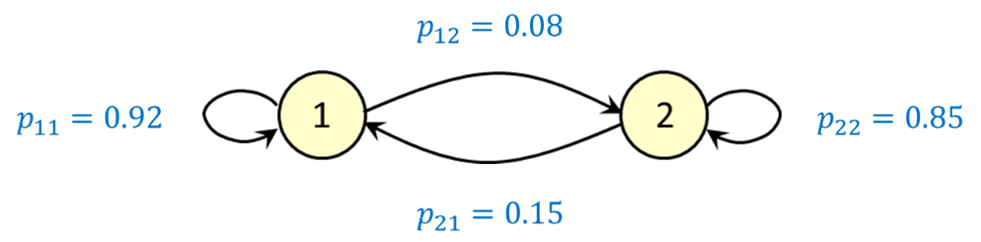

library(tidyverse)
steady_state_dist <- function(P) {
# Calculate the steady-state distribution of a discrete-time Markov chain
# defined by the transition matrix P
# Parameters:
# P : matrix
# The transition matrix of the Markov chain of interest.
# Returns:
# A vector representing the steady-state probabilities for the Markov chain.
# Check if P is a square matrix
if (!is.matrix(P) || nrow(P) != ncol(P)) {
stop("P must be a square matrix")
}
# Number of states
dim <- nrow(P)
# Set up the system of equations
Q <- P - diag(dim) # P - I
ones <- rep(1, dim)
Q <- cbind(Q, ones) # Append column of ones
QTQ <- Q %*% t(Q) # Compute Q * Q^T
bQT <- rep(1, dim) # Right-hand side vector
# Solve the equations and return the solution
return(solve(QTQ, bQT))
}Introduction
This exercise is based on the brand switching example discussed in the slides. It models consumer behavior using a discrete-time Markov chain with two states representing two brands.

Excel-Based Exploration
Initial Setup
Open the “Brand switching example – spreadsheet” Excel file.
- Initial market shares are in cells B2 (Brand 1) and C2 (Brand 2) — both start at 50%.
- Transition probabilities are found in:
- E2: \(\Pr(\text{Brand 1 next week} \mid \text{Brand 1 this week})\)
- F2: \(\Pr(\text{Brand 2 next week} \mid \text{Brand 1 this week})\)
- E3: \(\Pr(\text{Brand 1 next week} \mid \text{Brand 2 this week})\)
- F3: \(\Pr(\text{Brand 2 next week} \mid \text{Brand 2 this week})\)
Cells B3 and C3 contain formulas to calculate expected market shares after one week.
Task 1A
Copy the formulas in B3 and C3 down for at least 30 rows.
Question: How long does it take until the expected market share for Brand 1 exceeds 60%?
Answer: _________
Task 1B
Change the initial market shares:
Case 1: 30% (Brand 1) and 70% (Brand 2)
Case 2: 15% (Brand 1) and 85% (Brand 2)
Question: In each case, how many weeks does it take for Brand 1 to overtake Brand 2?
Answers: - Case 1: _________
- Case 2: _________
Regardless of starting conditions, the system quickly converges to a steady-state distribution.
Task 1C
Inspect further down the spreadsheet and record the steady-state expected market shares for both brands to 4 decimal places.
Answer:
Brand 1: _________
Brand 2: _________
These values are determined by the transition matrix, not the initial shares.
Using R to Find Steady-State Distribution
We now use R to compute the steady-state distribution algebraically.
R Function to Solve for Steady-State
Task 2A
Open the R quarto script 00_dtcm.qmd. This script can be used to find the steady-state distribution of a Markov chain, given the transition probability matrix. In our case, we are interested in using it to calculate the steady-state expected market shares for the two brands. Find the steady-state distribution in each of the following cases:
\[ P_1 = \begin{bmatrix} 0.96 & 0.04 \\ 0.07 & 0.93 \end{bmatrix} \]
\[
P_2 =
\begin{bmatrix}
0.75 & 0.25 \\
0.22 & 0.78
\end{bmatrix}
\]
\[ P_3 = \begin{bmatrix} 0.99 & 0.01 \\ 0.02 & 0.98 \end{bmatrix} \]
# Transition matrices
matrices <- list(
matrix(c(__, __, __, __), 2, byrow = TRUE),
matrix(c(__, __, __, __), 2, byrow = TRUE),
matrix(c(__, __, __, __), 2, byrow = TRUE)
)
# Compute steady-state for each
for (P in matrices) {
pi_dist <- steady_state_dist(P)
print(t(pi_dist))
}🧠 Even with very similar transition probabilities, the resulting steady-state market shares can be surprisingly different.
Task 2B – Extra Challenge: Algebraic derivation of steady-state
Let the transition matrix be:
\[ P = \begin{bmatrix} 1 - a & a \\ 2a & 1 - 2a \end{bmatrix}, \quad \text{where } 0 < a < 0.5 \]
We want to show the steady-state vector is:
\[ \boldsymbol{\pi} = \left(\frac{2}{3}, \frac{1}{3}\right) \]
a_vals <- c(__, __, __, __)
for (a in a_vals) {
P <- matrix(c(__, __, __, __), 2, byrow = TRUE)
pi_dist <- steady_state_dist(P)
print(t(pi_dist))
}